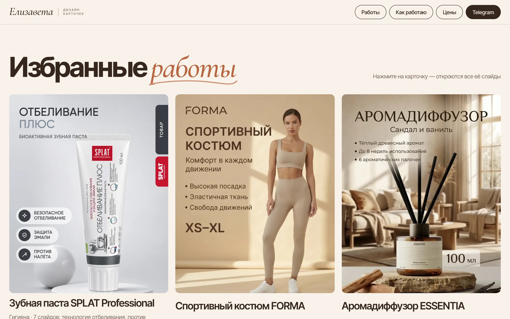
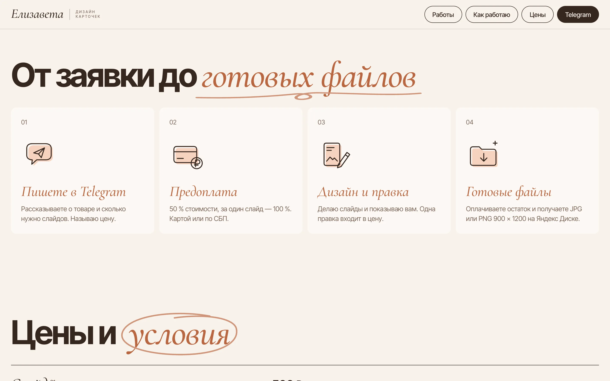
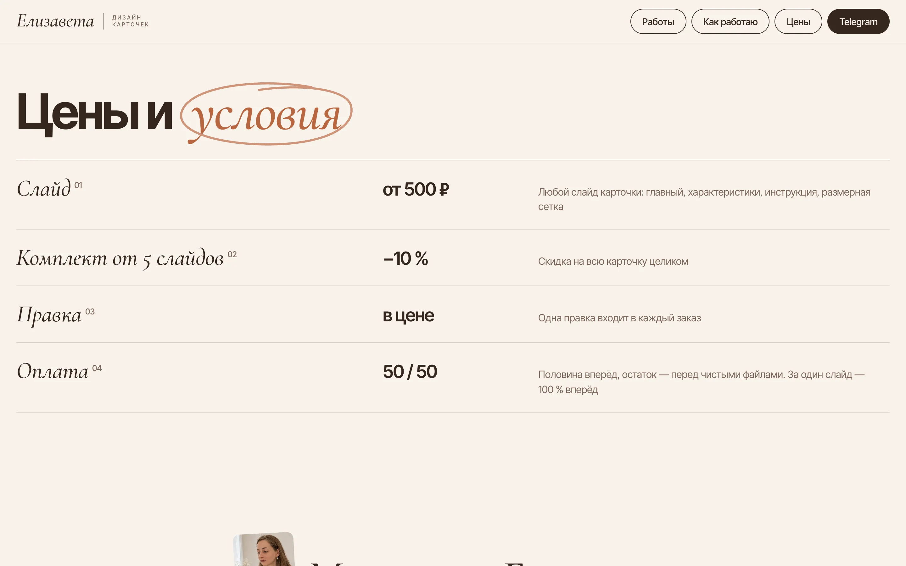
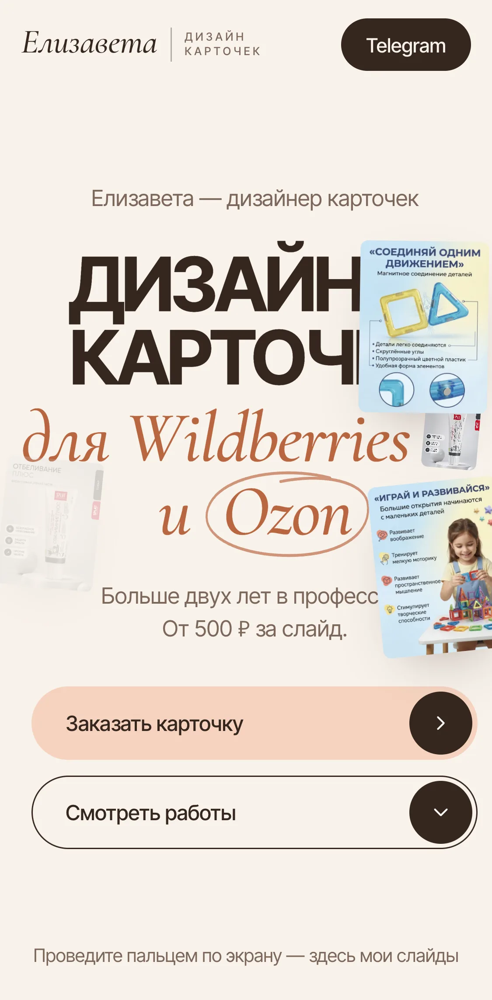
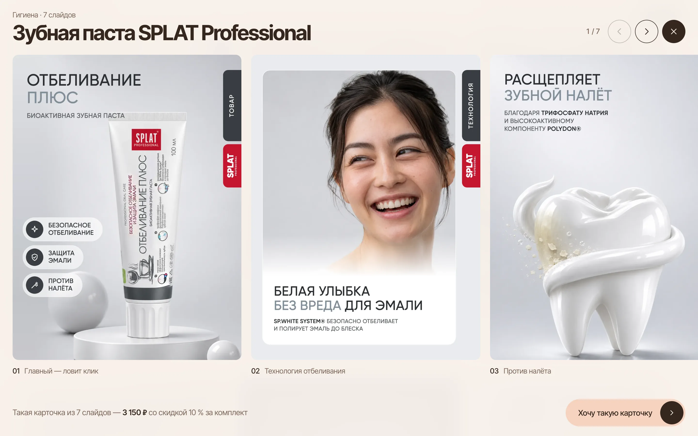
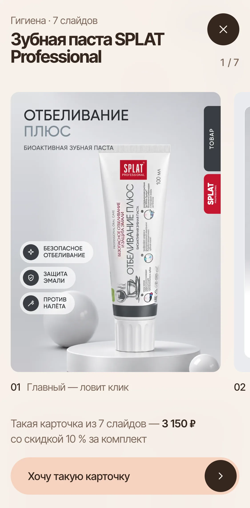

Разделы страницы
Ниже первого экрана шесть работ, четыре шага от заявки до готовых файлов, цены и условия: от 500 ₽ за слайд. В конце блок «Обо мне» и кнопка в Telegram.



Кейс 03
Сайт-портфолио дизайнера карточек для Wildberries и Ozon. Одна страница: работы, шаги заказа, цены и кнопка в Telegram.


Итог
Сайт работает с 25 ноября 2026 года на elizabeth-astor.github.io/portfolio.
Ниже первого экрана шесть работ, четыре шага от заявки до готовых файлов, цены и условия: от 500 ₽ за слайд. В конце блок «Обо мне» и кнопка в Telegram.



По нажатию открывается окно со всеми слайдами работы. Внизу цена такой карточки и кнопка «Хочу такую карточку».

Та же страница в одну колонку. Все разделы на месте, кнопки под палец, окно работы листается пальцем.
